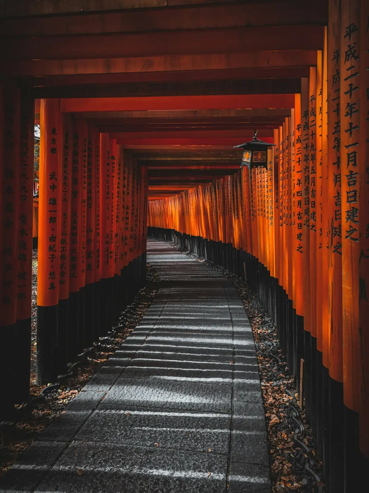
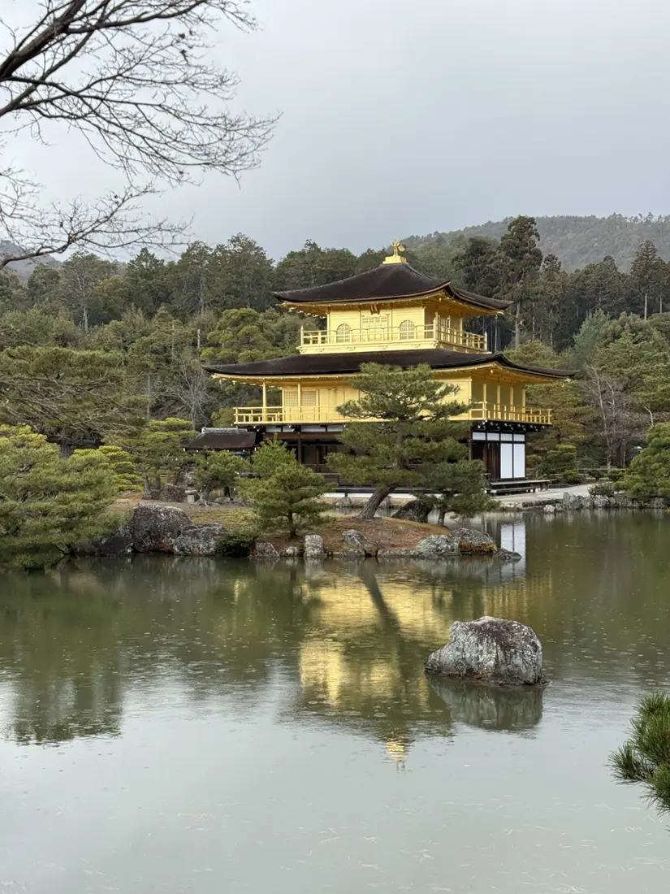
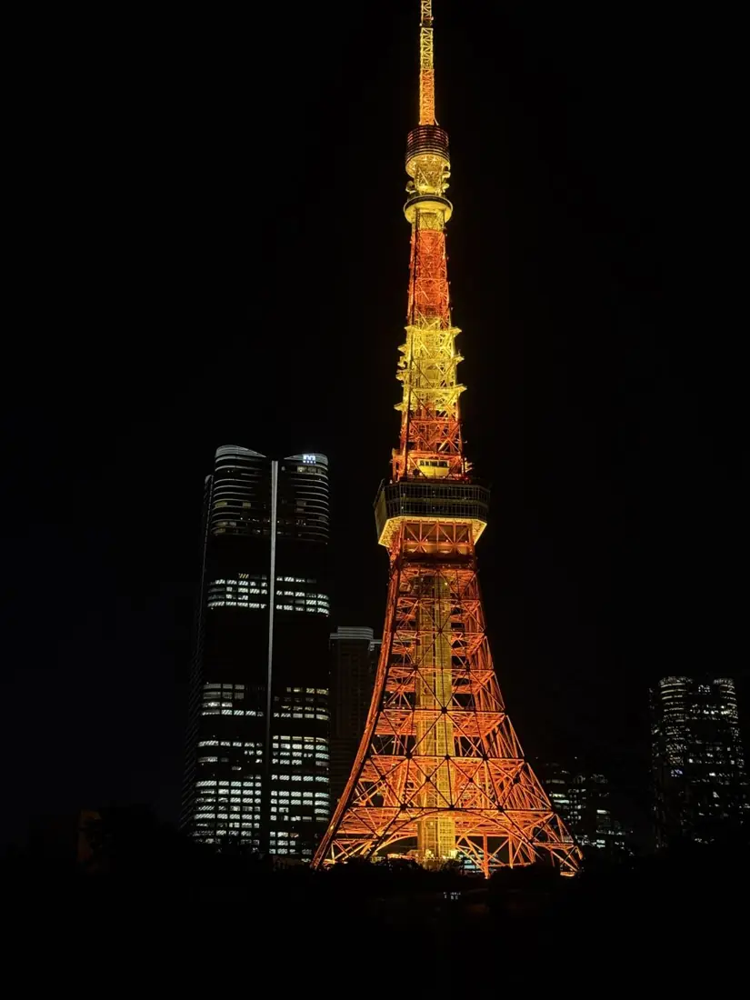
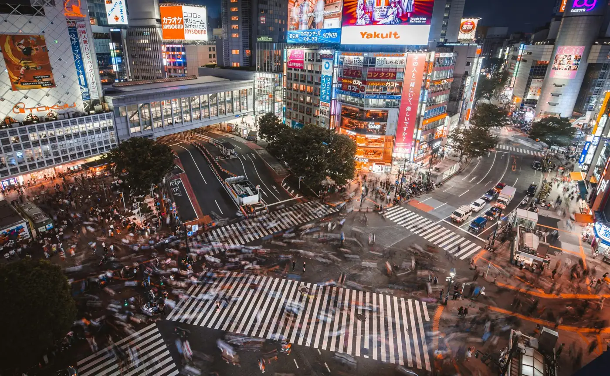
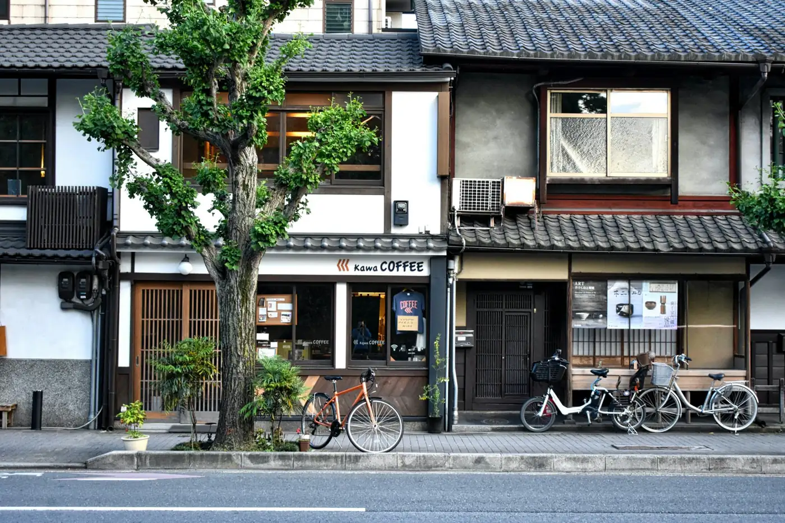
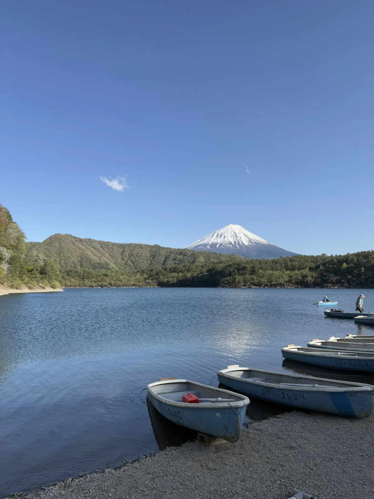
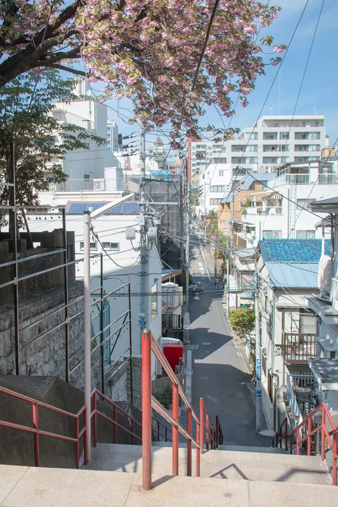
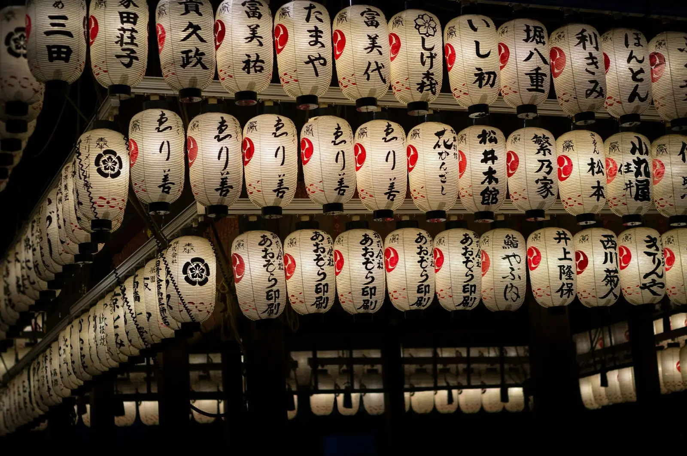

Setiap perjalanan Japanscape disusun dari awal. Dua contoh di bawah ini merupakan perjalanan yang telah kami rancang dan dapat menjadi inspirasi bagi Anda.
Ceritakan siapa saja yang ikut, kapan Anda tiba, dan pengalaman yang Anda harapkan. Kami merancang rute hari demi hari — lengkap dengan hotel, transportasi privat, pemandu, dan tiket — kemudian menyempurnakannya bersama Anda hingga sesuai.


Contoh ditampilkan tanpa nama klien. Jadwal, hari operasional atraksi, dan harga selalu disesuaikan pada tahap perencanaan.
Beberapa destinasi yang sering kami rancang, dan dapat dikombinasikan sesuai keinginan Anda.

Dinamika kota, kuliner, dan sudut-sudut tenang di antara gedung tinggi.

Kuil, gang kayu bersejarah, dan ritme yang lebih tenang.

Danau, desa kecil, dan pemandangan gunung paling terkenal di Jepang.

Tempat-tempat yang jarang tercantum dalam daftar wisata — keahlian founder kami.

Kirimkan rencana tanggal, jumlah peserta, dan minat perjalanan Anda. Kami akan kembali dengan rancangan itinerary pertama.